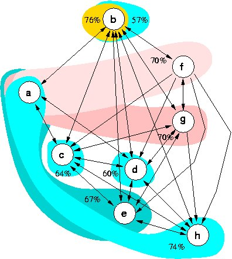

[0-100]-valued outranking graph
Best unique choice problematics
The problem concerns the construction of a unique best choice recommendation on the bais of the following pairwise outranking index (in %) delivered on eight decision alternatives concerning popular cars.
| S | a-vwgc | b-r9gt | c-gsax | d-p305 | e-tahg | f-audi | g-r18g | h-alfa |
|---|---|---|---|---|---|---|---|---|
| a-vwgc | - | 75 | 70 | 62 | 0 | 0 | 0 | 0 |
| b-r9gt | 76 | - | 90 | 100 | 82 | 82 | 82 | 80 |
| c-gsax | 70 | 86 | - | 100 | 100 | 46 | 80 | 91 |
| d-p305 | 64 | 65 | 94 | - | 88 | 22 | 94 | 74 |
| e-tahg | 33 | 57 | 93 | 100 | - | 0 | 80 | 86 |
| f-audi | 0 | 73 | 64 | 92 | 76 | - | 96 | 80 |
| g-r18g | 0 | 63 | 73 | 85 | 82 | 70 | - | 81 |
| h-alfa | 0 | 60 | 64 | 60 | 77 | 0 | 0 | - |
The non trivial best choice decision problem is a classic example recurrently used for presenting the Electre decision aid methods.
The valued outranking graph admits three outranking kernels: {b-r9gt}, {a-vwgc, f-audi} and {a-vwgc, g-r18g}, and five outranked kernels: {a-vwgc, h-alfa}, {a-vwgc, e-tahg}, {c-gsax}, {d-p305} and {b-r9gt}.

To make a RuBy recommendation, we must have a look at the L-qualifications of the outranking kernels.
| Choice | a-vwgc | b-r9gt | c-gsax | d-p305 | e-tahg | f-audi | g-r18g | h-alfa | Irred. | Ind. | Dom. | Abs. |
|---|---|---|---|---|---|---|---|---|---|---|---|---|
| {b-r9gt} RuBy choice | 24 | 76 | 24 | 24 | 24 | 24 | 24 | 24 | 100 | 100 | 76 | 57 |
| {a-vwgc, f-audi} | 70 | 30 | 30 | 30 | 30 | 70 | 30 | 30 | 100 | 100 | 70 | 0 |
| {a-vwgc, g-r18g} | 70 | 30 | 30 | 30 | 30 | 30 | 70 | 30 | 100 | 100 | 70 | 0 |
| {a-vwgc, h-alfa} | 74 | 26 | 26 | 26 | 26 | 26 | 26 | 74 | 100 | 100 | 0 | 74 |
| {a-vwgc, e-tahg} | 67 | 33 | 33 | 33 | 67 | 33 | 33 | 33 | 82 | 67 | 0 | 76 |
| {c-gsax} | 36 | 36 | 64 | 36 | 36 | 36 | 36 | 36 | 100 | 100 | 46 | 64 |
| {d-p305} | 40 | 40 | 40 | 60 | 40 | 40 | 40 | 40 | 100 | 100 | 22 | 60 |
| {b-r9gt} | 43 | 57 | 43 | 43 | 43 | 43 | 43 | 43 | 100 | 100 | 76 | 57 |
Despite the fact of being conjointly an outranking (76% credibility) and an outranked choice (57% credibility), decision action b-r9gt represents the most credible effective best choice. Indeed, it is the most robust recommandation in the sense that it is the only effective outranking choice with a concordance majority of more than 75%.
In case the decision maker would accept as satisfactory a global concordance of 70% and more, the RuBy best choice recommendation would become the quartet {a-vwgc, b-r9gt, f-audi, g-r18g}.A thorough presentation and discussion of this example is given in Fodor & Roubens (1994).